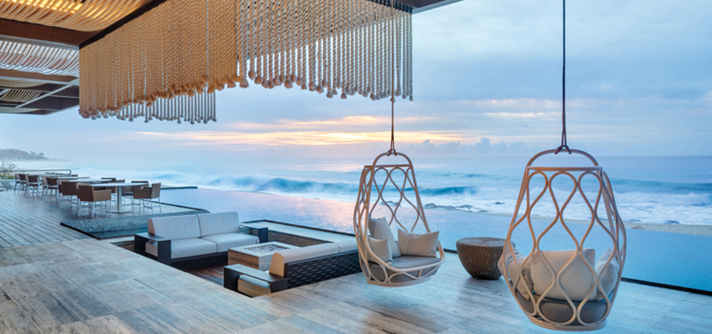
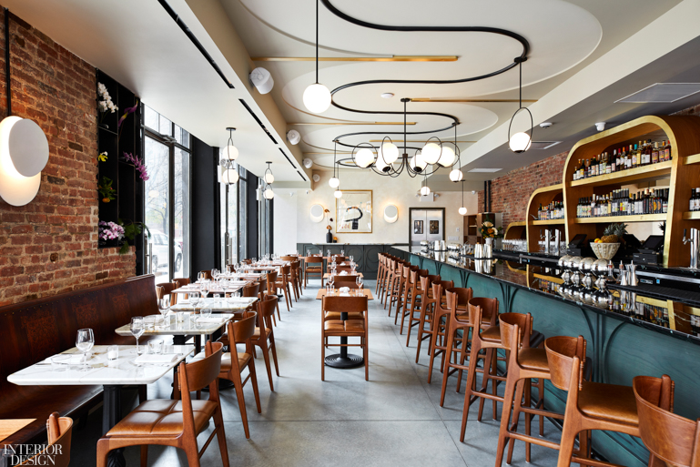
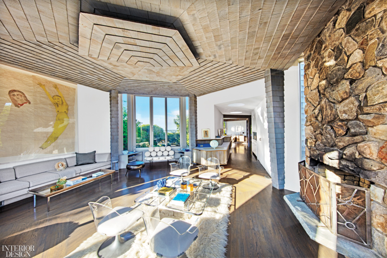
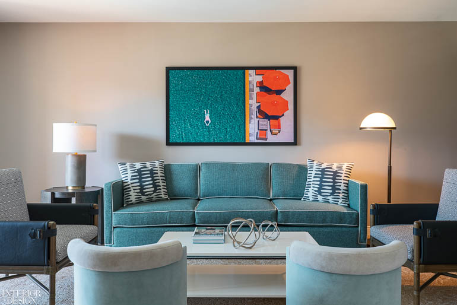
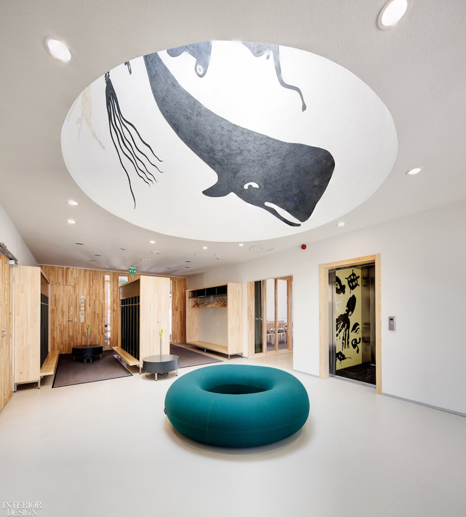
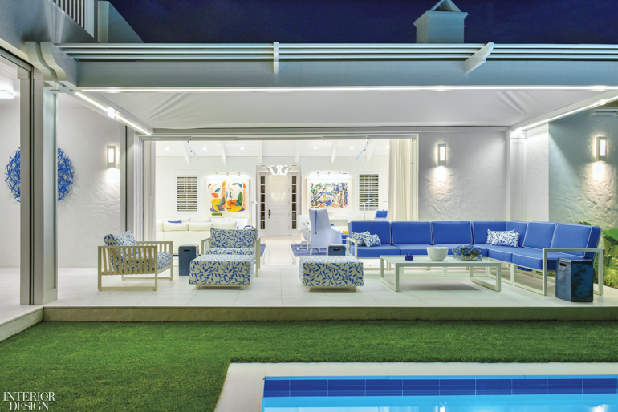

Sordo Madaleno Arquitectos Brings a Modernist Perspective to Mexico’s Solaz Los Cabos Resort
In Baja California, the Sea of Cortés coast from Cabo San Lucas to the north is peppered with resort hotels. In style they tend to be either steroidal haciendas or monumental hulks. By contrast, the new Solaz Los Cabos is a refreshing example of Mexican modernismo. No surprise, then, that it is the work of Sordo Madaleno Arquitectos, a firm founded in 1937 by pioneering modernist architect Juan Sordo Madaleno and known since for award-winning hotel design.
Michael Groth-Designed Ernesto’s Brings San Sebastian Vibe to the Lower East Side
Groth collaborated with Bartlow and his business partners Davitta and Alexandra Niakani to create a space, he says, “inspired by the gorgeous examples of Art Nouveau architecture in the storefronts and interiors of San Sebastian, which emerge everywhere from the gentle curves and tapers of the back bar to the curvilinear ceiling moulding detail in the dining room.”
Lauren Rottet Reinvents a Montauk Beach House
Born, bred, and based in Texas, Lauren Rottet wields a global sphere of influence. The Hall of Famer and founding principal of Houston’s Rottet Studio—which now has offices in Los Angeles, New York, and Shanghai—is a self-described workaholic. Her projects and products have garnered innumerable awards. Yet even this chronic overachiever needs a place to chill now and then.
SFA Design Renews Renaissance Esmeralda Resort & Spa with Mid-Century Desert Chic
Space has never been an issue at the Renaissance Esmeralda Resort & Spa, Indian Wells in California. First of all, the property is huge: 23 lushly landscaped acres, not including the golf course. The 30-year-old hotel itself is similarly large, offering 560 guest rooms, including 103 suites. The surprise, though, is the “boutique-like experience within the large property,” says General Manager Christoph Roshardt, who helped spearhead the renovation along with SVP and Global Brand Leader Brian Povinelli. In fact, notes Povinelli, “Celebrating the unexpected” is what it’s all about. “We’re transforming the brand, design-wise.”
10 Questions With… Päivi Meuronen
“Nature is important to most Finns and similarly to me as a key source of inspiration,” says Päivi Meuronen who can be found—during winter months—Nordic skating on the archipelagos of the Baltic Sea. Since 2003, leading a team specializing in interiors, Meuronen has been wielding her creative eye as interior architect and creative partner for Helsinki-based firm JKMM Architects.
Jennifer Post Design Makes Simplicity the Point of a Stucco-Clad Palm Beach Residence
Jennifer Post sums up this snappy Palm Beach, Florida, abode in three words: “Simplicity, simplicity, simplicity!” (OK, technically one word.) “My challenge was to streamline,” she explains. “This house is not grandiose; it’s a jewel box.” It’s true that the cottage exhibits an almost disarming clarity. For starters, every surface is white—walls, floors, ceiling, window frames—as are the majority of the furnishings, and there’s primarily one accent color: beach-appropriate blue.